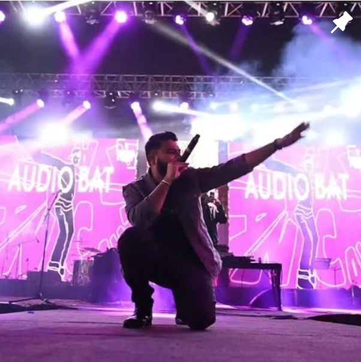
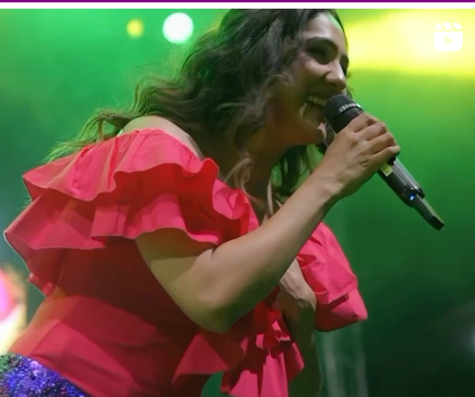
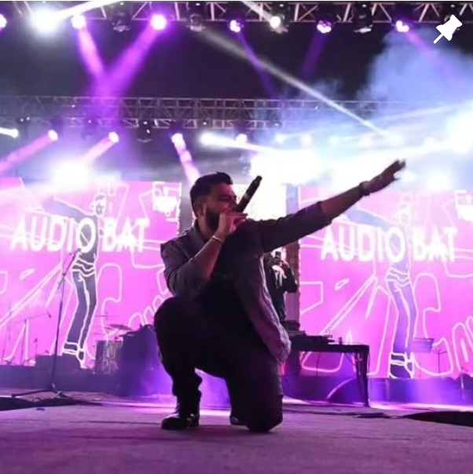
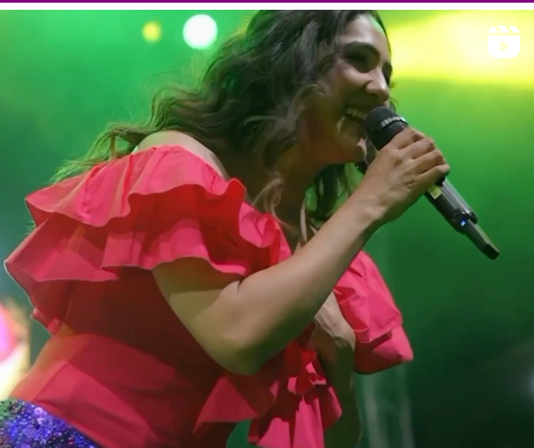

Glimpses
 



Description
TAARANGANA : The Annual Cultural Fest of IGDTUW
Taarangana, the annual cultural fest of Indira Gandhi Delhi Technical University for Women (IGDTUW),
is a much-anticipated event that brings a burst of energy, creativity, and celebration to the campus.
This fest is renowned for its vibrant atmosphere and diverse range of activities, providing students
with a unique platform to showcase their talents and immerse themselves in cultural festivities.
Taarangana stands out as a hallmark of IGDTUW, fostering a sense of community and artistic expression
among students.
One of the key highlights of Taarangana is the opportunity it provides for students to experience
live performances by some of the most famous artists from their playlists. Over the years, Taarangana
has seen sensational performances by renowned artists such as Shaan, Sunidhi Chauhan, and Darshan Raval,
among others. These performances create an electrifying atmosphere, allowing students to vibe with their
favorite artists and enjoy unforgettable musical experiences right on their campus.
Beyond the star-studded performances, Taarangana is a celebration of art, culture, and creativity in
all its forms. The fest features a wide array of events, including dance and music competitions, drama
and literary events, fashion shows, and much more. Each event is meticulously organized to ensure
maximum participation and enjoyment. Taarangana not only provides a platform for students to express
their artistic talents but also offers them a chance to learn, grow, and create lasting memories.
Whether you're a performer or a spectator, Taarangana promises an enriching and exhilarating experience
for everyone involved.